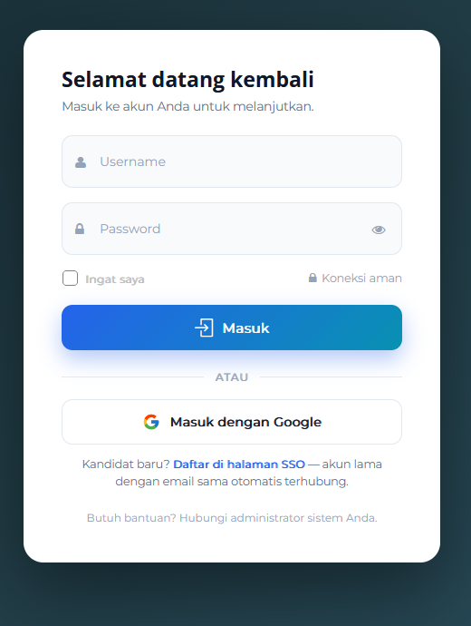
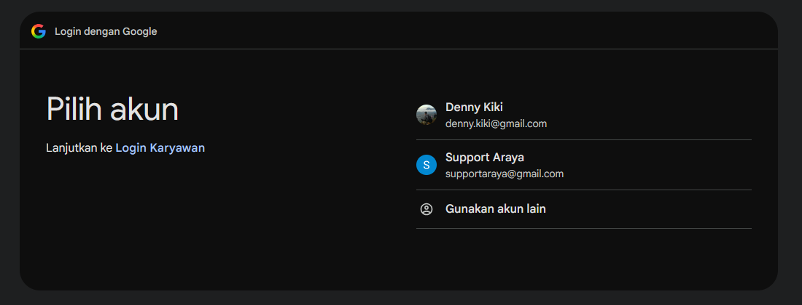
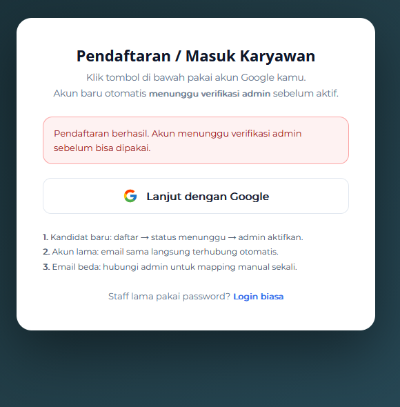
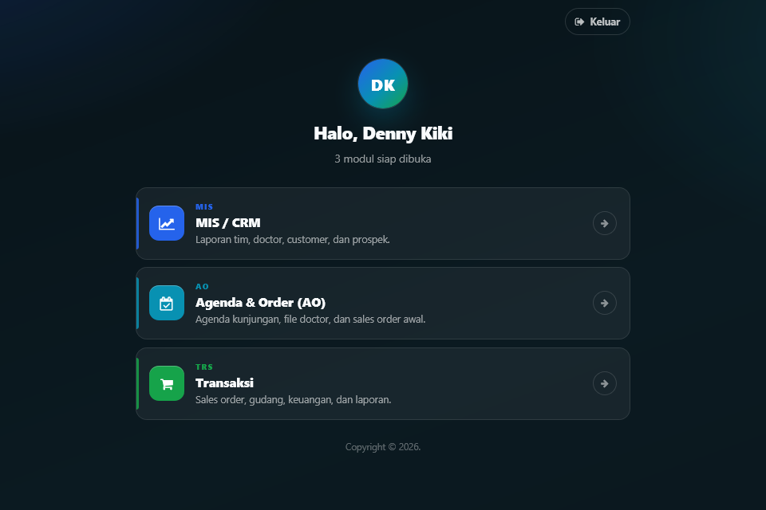
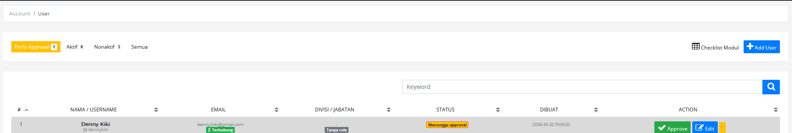
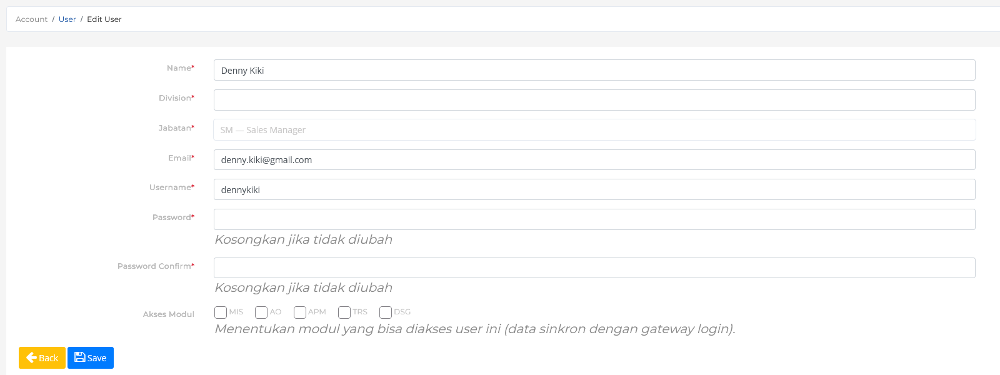
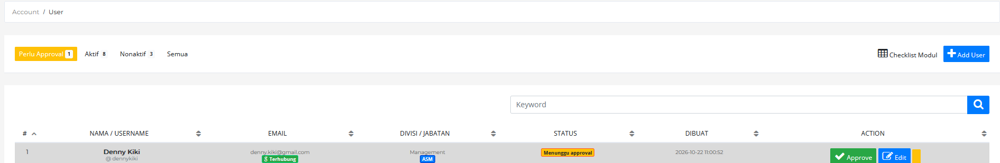
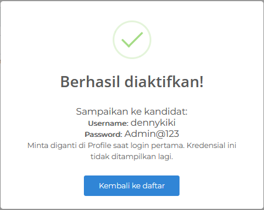

Dokumen ini menjelaskan alur pendaftaran kandidat baru melalui Google, verifikasi oleh administrator, serta cara login dan memilih modul. Bagian A untuk kandidat/user, Bagian B untuk administrator.
Ringkasan alur
| Tahap | Pelaku | Yang dilakukan |
|---|---|---|
| 1 | Kandidat | Membuka halaman login dan memilih Masuk dengan Google. |
| 2 | Kandidat | Memilih akun Google yang akan digunakan. |
| 3 | Sistem | Membuat akun baru dengan status Menunggu approval. |
| 4 | Administrator | Membuka Account → User → Perlu Approval, lalu klik Edit. |
| 5 | Administrator | Melengkapi divisi, jabatan, username, password, dan akses modul. |
| 6 | Administrator | Mengklik Approve dan mengaktifkan akun. |
| 7 | Administrator | Menyampaikan username dan password awal kepada kandidat. |
| 8 | Kandidat | Login kembali, lalu memilih modul di portal. |
Bagian A — Kandidat / User
A.1 Pendaftaran akun baru
-
Buka halaman login portal di
https://trans.lssoft88.xyz/auth/superuser/. -
Klik tombol Masuk dengan Google.

Gambar 1 — Halaman login. Kandidat baru dapat langsung memilih Masuk dengan Google.
-
Pilih akun Google yang akan didaftarkan.

Gambar 2 — Jika ada lebih dari satu akun, pilih salah satu. Jika hanya satu akun, Google langsung menampilkan verifikasi.
-
Jika akun belum pernah terdaftar, sistem akan menampilkan pesan berikut.

Gambar 3 — Pendaftaran berhasil, akun menunggu verifikasi administrator.
Hal penting saat mendaftar:
- Gunakan email dengan domain
gmail.com. - Jika email sudah terdaftar dan belum terhubung ke Google, sistem akan menautkan akun lama secara otomatis.
- Jika email Google berbeda dengan email akun lama, hubungi administrator untuk proses penautan manual.
- Cukup daftar satu kali. Pendaftaran ulang dengan email berbeda akan menyulitkan proses verifikasi.
A.2 Menunggu verifikasi
Setelah pendaftaran berhasil, akun belum aktif. Administrator akan memeriksa pengajuan dan melengkapi data kandidat.
- Status akun di sistem administrator adalah Menunggu approval.
- Jika kandidat mencoba login sebelum diaktifkan, sistem menampilkan pesan “Akun belum aktif. Hubungi admin untuk verifikasi.”
- Kandidat tidak perlu mendaftar ulang; cukup tunggu konfirmasi administrator.
A.3 Menerima kredensial
Setelah akun diaktifkan, administrator akan mengirimkan:
- Username
- Password awal
Password awal bersifat sementara. Segera ganti password melalui menu Profile setelah login pertama. Jangan membagikan password kepada orang lain.
A.4 Login
Kandidat dapat login dengan dua cara.
Cara 1 — Google (disarankan)
- Buka halaman login di
https://trans.lssoft88.xyz/auth/superuser/. - Klik Masuk dengan Google.
- Pilih akun Google yang sama dengan saat pendaftaran.
- Setelah berhasil, sistem langsung mengarahkan ke portal modul.
Cara 2 — Username dan password
- Buka halaman login di
https://trans.lssoft88.xyz/auth/superuser/. - Isi Username dan Password yang diberikan administrator.
- Centang Ingat saya bila menggunakan perangkat pribadi.
- Klik Masuk.
Jika password lupa atau tidak berfungsi, hubungi administrator. Administrator dapat mengatur ulang password melalui menu Edit User.
A.5 Memilih modul
Setelah login, kandidat akan diarahkan ke portal sesuai hak aksesnya.

Gambar 4 — Portal gateway menampilkan modul yang dapat dibuka oleh user.
- Jika user hanya memiliki satu modul, sistem langsung membuka modul tersebut.
- Jika user memiliki lebih dari satu modul, portal menampilkan daftar modul. Klik salah satu kartu untuk masuk.
- Jika user belum memiliki modul, sistem menampilkan pesan untuk menghubungi administrator.
- Klik Keluar di kanan atas untuk logout.
Bagian B — Administrator / Operator
B.1 Membuka pengajuan kandidat
-
Login sebagai administrator.
-
Buka menu Account → User.
-
Pilih tab Perlu Approval.

Gambar 5 — Daftar kandidat yang menunggu approval.
Kolom yang perlu diperhatikan:
- Nama / Username — identitas kandidat.
- Email — badge Terhubung berarti akun sudah terhubung dengan Google.
- Divisi / Jabatan — awalnya Tanpa role dan modul default.
- Status — Menunggu approval.
- Action — tombol Approve, Edit, dan tombol nonaktifkan.
Gunakan kolom Keyword untuk mencari nama, username, atau email bila daftar pengajuan banyak.
B.2 Melengkapi data kandidat
-
Klik Edit pada baris kandidat.
-
Lengkapi data berikut.

Gambar 6 — Form Edit User untuk melengkapi data dan hak akses kandidat.
- Name — sesuaikan dengan nama kandidat.
-
Division — wajib diisi, misalnya
MarketingatauManagement. - Jabatan — pilih SM — Sales Manager atau ASM — Ass Sales Manager.
- Email — biasanya sudah terisi dari akun Google.
- Username — wajib unik dan mudah diingat kandidat.
- Password dan Password Confirm — isi password awal 8–16 karakter. Kosongkan hanya jika tidak ingin mengubah password.
-
Akses Modul — centang modul yang boleh digunakan:
MIS,AO,APM,TRS,DSG.
-
Klik Save.
-
Kembali ke daftar user dan pastikan divisi, jabatan, serta modul sudah tampil.

Gambar 7 — Data kandidat setelah dilengkapi; status masih Menunggu approval.
Catatan:
- Jabatan menentukan role dan paket menu default kandidat.
- Akses Modul menentukan modul yang muncul di portal setelah login.
- Jika tidak ada modul yang dicentang, kandidat tidak dapat membuka modul apa pun.
- Rincian checklist menu per fitur untuk sementara disembunyikan; pengaturan akses dilakukan melalui modul.
B.3 Approve dan menyampaikan kredensial
-
Pastikan password sudah diisi pada langkah Edit. Tombol Approve tidak dapat dilanjutkan jika password belum diset.
-
Klik Approve pada baris kandidat.
-
Periksa kembali data pada halaman konfirmasi:
- Nama dan username
- Password awal (wajib, 8–16 karakter)
- Jabatan
- Divisi dan cabang
- Akses modul
-
Klik Aktifkan + Terapkan Paket.
-
Konfirmasi aktivasi.

Gambar 8 — Kredensial ditampilkan satu kali setelah akun berhasil diaktifkan.
-
Catat dan kirimkan Username dan Password kepada kandidat melalui WhatsApp atau email.
-
Klik Kembali ke daftar. Kandidat akan masuk ke tab Aktif.
Penting:
- Password pada halaman approve wajib diisi. Jika password sudah diisi pada langkah Edit, gunakan password yang sama agar kredensial yang ditampilkan konsisten.
- Kredensial hanya ditampilkan satu kali. Jika lupa, administrator harus mengatur ulang password melalui Edit User.
- Jangan mengirim kredensial melalui grup atau kanal publik.
B.4 Setelah aktivasi
- Kandidat login kembali melalui Masuk dengan Google atau username/password.
- Portal akan menampilkan modul sesuai Akses Modul yang dicentang.
- Jika kandidat melaporkan akun masih belum aktif, periksa tab Aktif dan pastikan statusnya sudah aktif.
- Jika kandidat tidak melihat modul yang seharusnya, periksa kembali Edit → Akses Modul, lalu minta kandidat logout dan login ulang.
B.5 Perubahan data, reset password, dan penonaktifan
- Ubah data — buka Account → User → Edit, ubah data yang diperlukan, lalu klik Save.
- Reset password — isi Password dan Password Confirm dengan password baru 8–16 karakter, lalu simpan. Jika password dikosongkan, password lama tetap digunakan.
- Nonaktifkan user — klik tombol merah (ikon tempat sampah) pada kolom Action.
- Aktifkan kembali — pada tab Nonaktif, klik tombol kuning (ikon reload).
- Setelah jabatan atau akses modul diubah, minta user logout dan login kembali agar hak akses terbaru diterapkan.
Troubleshooting
| Masalah | Penyebab | Tindakan |
|---|---|---|
| Muncul pesan “Email … tidak diizinkan” | Domain email bukan gmail.com. |
Gunakan akun Gmail (gmail.com). |
| Muncul pesan “Akun belum aktif” | Akun masih menunggu approval. | Administrator memeriksa tab Perlu Approval dan mengaktifkan akun. |
| Pendaftaran berhasil tetapi kredensial belum diterima | Akun belum di-approve atau kredensial belum dikirim. | Hubungi administrator; jangan mendaftar ulang. |
| Muncul “Akun Anda belum memiliki akses modul” | Tidak ada modul yang dicentang pada user. | Administrator membuka Edit → Akses Modul dan mencentang modul. |
| Login Google gagal | Akun Google tidak membagikan email atau sesi Google bermasalah. | Coba lagi, pastikan izin email diberikan, lalu hubungi administrator. |
| Password salah atau lupa | Password telah diubah atau kredensial salah catat. | Administrator melakukan reset melalui Edit User. |
| Tombol Approve tidak bisa digunakan | Password belum diset. | Isi password melalui Edit User terlebih dahulu. |
| User tidak bisa membuka modul tertentu | Modul belum dicentang atau user belum login ulang. | Periksa akses modul, lalu minta user logout dan login kembali. |
Keamanan akun
- Gunakan password 8–16 karakter dan kombinasi huruf serta angka.
- Ganti password awal segera setelah login pertama.
- Jangan membagikan password kepada rekan kerja atau pihak lain.
- Selalu klik Keluar setelah menggunakan perangkat bersama.
- Administrator tidak dapat melihat password lama. Jika password hilang, lakukan reset melalui Edit User.
Lampiran
Daftar modul
| Kode | Nama | Fungsi |
|---|---|---|
MIS |
MIS / CRM | Laporan tim, doctor, customer, dan prospek. |
AO |
Agenda & Order | Agenda kunjungan, file doctor, dan sales order awal. |
APM |
APM | Modul APM. |
TRS |
Transaksi | Sales order, gudang, keuangan, dan laporan. |
DSG |
Design | Design drive dan aset produk. |
Domain email yang diizinkan
gmail.com
Status user
| Status | Arti |
|---|---|
| Menunggu approval | Akun sudah terdaftar tetapi belum bisa digunakan. |
| Aktif | Akun sudah diaktifkan dan dapat login. |
| Nonaktif | Akun dinonaktifkan sementara dan tidak dapat login. |